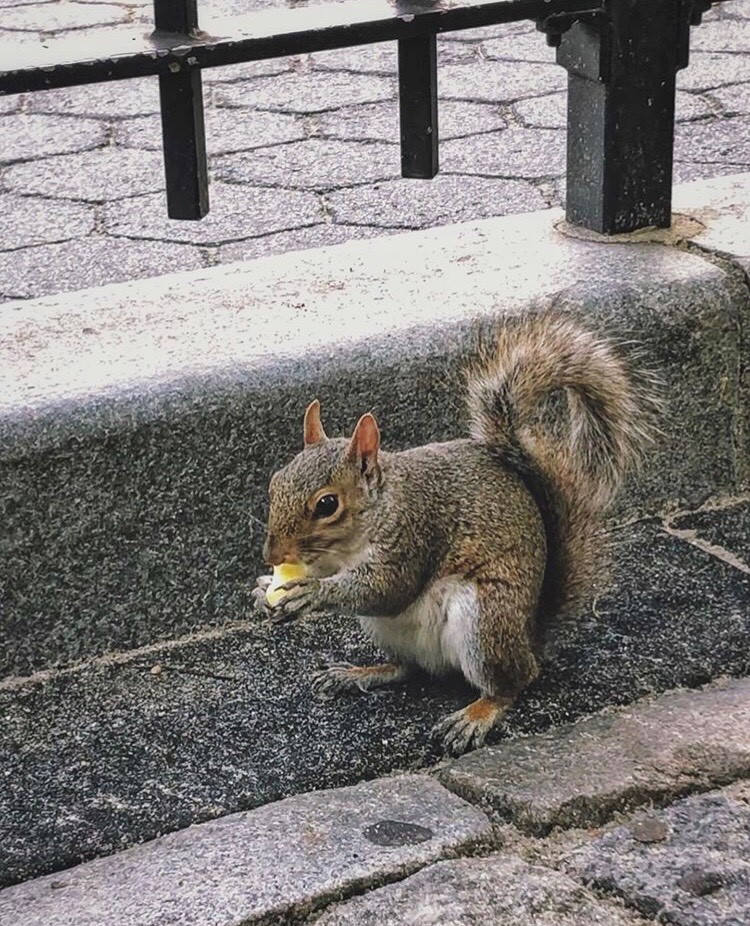

Squirrel

The squirrel is a small, furry rodent that lives
in trees. The species shown above is called
a eastern gray squirrel, their diet consist of various
seeds, nuts, insects and more. Squirrels are extrememly
agile and can be found living in New York parks or even
many people's backyards.